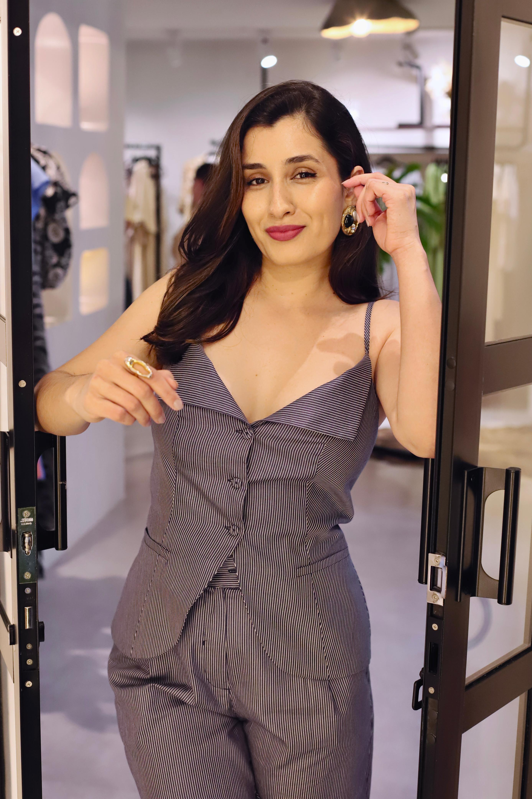

Consultoria 01
Consultoria completa
Processo personalizado para alinhar seu visual aos seus objetivos. Inclui análise de estilo, avaliação de biotipo, análise estratégica do guarda-roupa, planejamento de compras e montagem de looks.
Consultoria de imagem e estilo
Atendimentos personalizados para alinhar o seu visual aos seus objetivos, sua rotina e a forma como você deseja se posicionar.
Conheça as possibilidades
Para você
Da construção completa da sua imagem a uma necessidade específica, cada atendimento tem uma direção prática e personalizada.
Consultoria 01
Processo personalizado para alinhar seu visual aos seus objetivos. Inclui análise de estilo, avaliação de biotipo, análise estratégica do guarda-roupa, planejamento de compras e montagem de looks.
Consultoria 02
Sessão online de uma hora para resolver desafios específicos: escolha de look para evento, dúvidas sobre combinações ou compras pontuais.
Consultoria 03
Styling para ensaios fotográficos, planejando cada detalhe do visual para traduzir sua essência, reforçar seu posicionamento e transmitir confiança diante das câmeras.
Consultoria 04
Planejamento estratégico de looks para viagens, garantindo praticidade, estilo e versatilidade em cada ocasião.

Para a vida real
A consultoria organiza referências, preferências e necessidades em critérios que ajudam você a se sentir mais segura em cada ocasião.
Quero conversarPara empresas
Treinamentos e palestras que aproximam imagem, atendimento e posicionamento de marca.
Empresas 01
Abordagem sobre dress code, estilo e comunicação visual, mostrando como a aparência influencia percepção, credibilidade e imagem profissional.
Empresas 02
Programas voltados para lojistas, vendedoras e influenciadoras, com temas relacionados a imagem e estilo para compreender melhor o público e oferecer uma experiência mais alinhada e estratégica.
Vamos construir juntas
Entre em contato para conversar sobre o momento da sua equipe ou negócio e entender a melhor direção para o atendimento.
Como funciona
O processo começa por uma conversa para entender a demanda e definir o atendimento que melhor atende ao seu objetivo.
Você apresenta seu momento, suas necessidades e o resultado que busca.
Definimos o serviço e o caminho mais adequado para a sua demanda.
O atendimento transforma o direcionamento em escolhas práticas para sua rotina.
Contato
Entre em contato para agendar sua consultoria ou conversar sobre uma solução para sua empresa.